Wildernests x Bear Witness — Master Storyboard
The Frontier
Approximately 2:25 · 23 scenes · 4 acts
Built for AI-generation, stock, and existing Wildernests assets · 28 May 2026
View mood board →
01 / 30
Creative Intent
A two-minute teaser selling desire, not features. We follow one anonymous pioneer on horseback through a single landscape that morphs around him from prehistory to the present.
The thesis: for two hundred thousand years humans have been chained to resources, and now, for the first time, we are free of them. The home is the answer to a question civilisation has been asking since the first city was built.
Acts 1 & 4 are strict reality — dawn through to dusk on one day. Acts 2 & 3 are mythic, non-linear, operating on dream logic. We never see the rider's face.
02 / 30
Act 1
The Rider
0:00 – 0:25
Cold dawn. American high country. A lone rider on horseback, dog at his flank, moving along a shallow river. Reality. We never see his face.
03 / 30
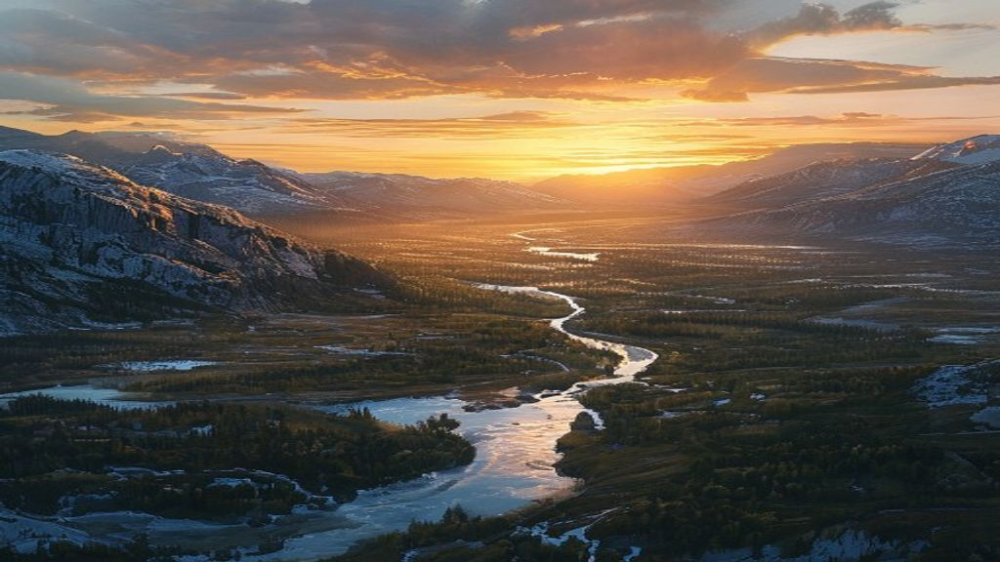
Aerial wide. Cold dawn light across endless high country. No music yet. Wind and silence. Hold the emptiness longer than feels comfortable, then drift down toward the ground.
Stock drone aerial — Montana, Utah, Wyoming, Colorado. Search: high country dawn, mountain plain sunrise, western landscape aerial.
VO — whispered, almost lost in the wind
"For two hundred thousand years…"
Single low cello enters.
04 / 30
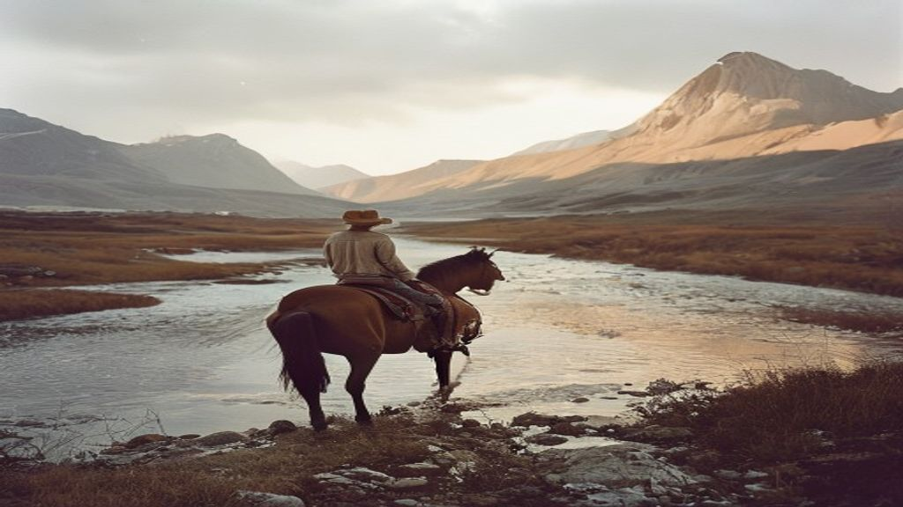
Cut to ground level. Behind the rider. His back, his hat, the dog walking by the horse's flank. He moves along a shallow river. Hooves on stone, water running.
AI-generated. Locked rider reference. Tracking shot — behind rider on horseback, dog alongside, slow walk along a shallow river, cold morning light, weathered Filson jacket, Stetson hat, no face visible.
VO
"…we've built our lives around what we could not live without."
05 / 30
Act 2
The Civilisations
0:25 – 1:05
As the rider passes, the ground comes alive. Earth rises into the forms of human civilisation — walls, towers, cities — all made of the same brown dirt. Each one builds, lives for seconds, then collapses back as he passes.
Strict rule: everything is the same brown earth. Not mudbrick. Not adobe. Dirt. Only the geometry changes.
07 / 30
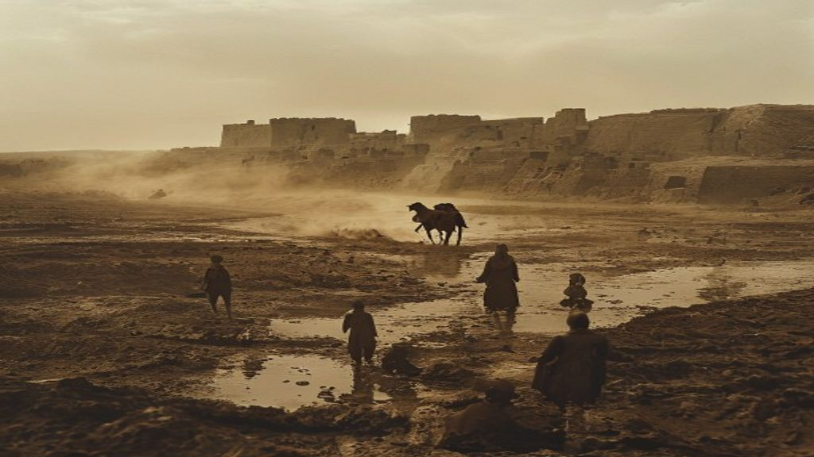
Riverbank. Earth stirs and rises into a Mesopotamian settlement. Walls, figures, smoke columns, animals — all formed from the same brown dirt. As the rider passes, forms lose cohesion and fall. Within two seconds: plain reeds and stone.
AI or VFX composite. Prompt: a Mesopotamian settlement made entirely of brown earth and dirt rising up from a riverbank as a horseman rides past, mud-coloured figures, mud-coloured walls, collapsing back into the bank.
VO
"We shaped our first cities from mud and silt."
08 / 30
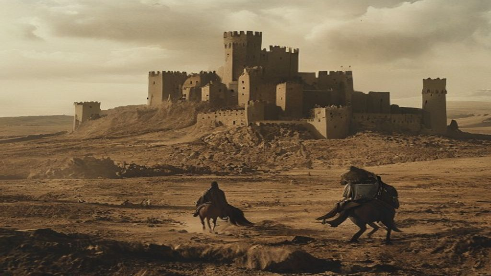
Open plain. Earth rises into a medieval walled town. Walls, towers, ploughs, oxen, figures in the fields — all the same brown dirt. Furrows with crops of dirt swaying above them. Dust smoke from earthen chimneys. As he rides past, the town crumbles row by row back into flat plain.
AI or VFX composite. Prompt: a medieval walled town entirely made of brown dirt rising out of a plain as a horseman rides past, dirt-coloured oxen and ploughs, then crumbling back into the ground.
VO
"We built where the soil was fertile and the ground held firm."
Second cello joins.
09 / 30
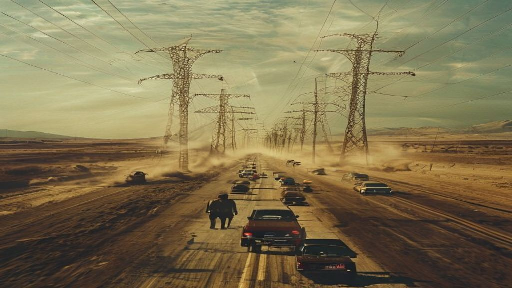
He crosses old ground. Pylons of dirt rise around him, taller than the trees. Power lines form as thin strands of suspended dirt. In the distance, a highway forms in dust and dirt-cars stream along it. Then — pylons crumble, strands fall, cars dissolve, the road itself returns to plain earth.
AI or VFX composite. Prompt: electricity pylons and power lines made of brown earth and dust rising up around a horseman, a highway and cars formed of dirt streaming in the distance, then everything collapsing back into the plain.
VO
"We hung our lives off wires and roads and pipes. We handed our water to the reservoir. Our power to the grid. Our planning to a committee. We lived where the system allowed us to."
10 / 30
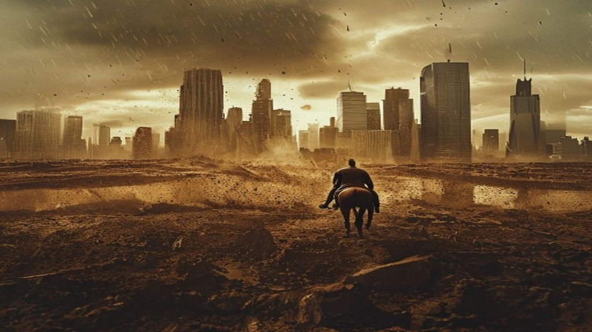
Camera lifts. Far behind him, the entire horizon rises. A full modern city of dirt. Glass towers made of brown earth. Gridlock of dirt-cars. Then — in one extended motion — tower by tower, the whole skyline begins to collapse. Falls like sand rain. Returns to plain.
AI or VFX composite. Prompt: a full modern city skyline made entirely of brown dirt and dust rising on the horizon behind a horseman, glass towers but all brown earth, then the entire city collapsing in a single motion back into the plain.
VO — music swells, then drops sharply
"Every home we have ever built has been built by necessity. We have lived where the river ran and the land was rich and the roads ran through, never where we longed to."
11 / 30
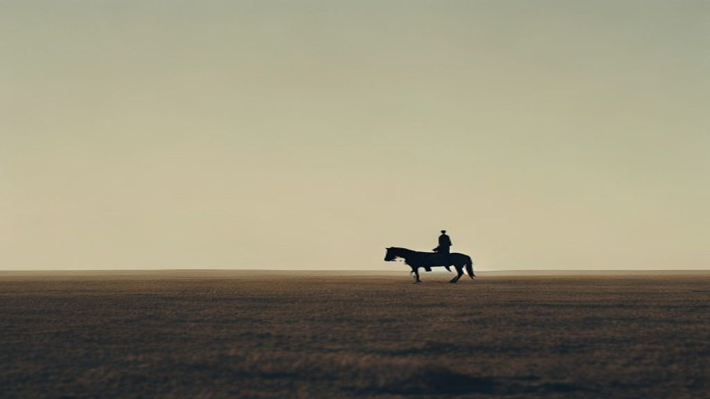
Two beats of silence.
Just hooves and breath.
"Until now."
12 / 30
Act 3
The Turn
1:05 – 2:00
Dream logic. The rider's journey continues in golden-hour reality, but the cutaways to the home move through different times, weathers, and conditions. The home appears many times here — but never from the ridgeline-silhouette angle reserved for Scene 21.
13 / 30
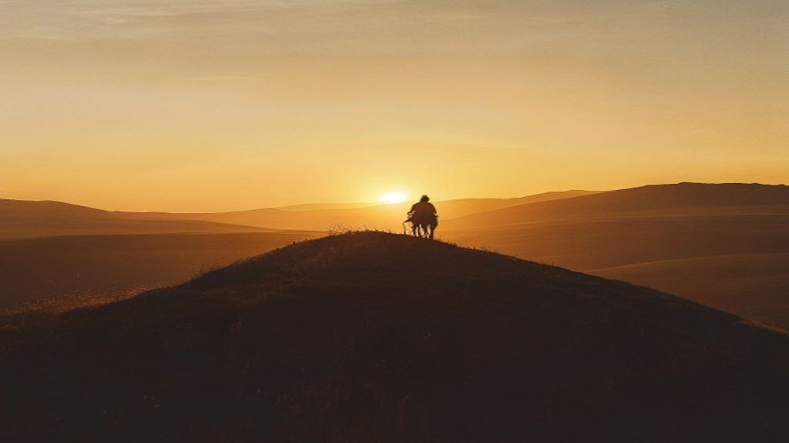
A single dark shape on a ridge, far in the distance, barely visible against the late sky. The rider continues toward it.
AI or composite using existing Wildernests render. Rider in foreground, distant home as small silhouette on a ridge, late afternoon light.
VO
"The real renegades aren't building cities anymore. We're walking back out into the land. Taking everything we need with us."
Piano enters quietly under the cellos.
14 / 30
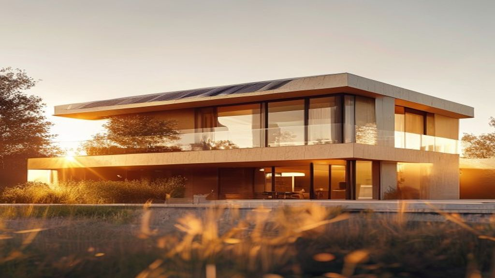
Power
Cut to the home, morning. Low sun catches a solar surface integrated into the cladding. Light pours across the structure.
Existing Wildernests morning render, or new AI generation using the home's design language. Hero angle on cladding/solar surface in low sun.
VO
"The sun is our power."
15 / 30
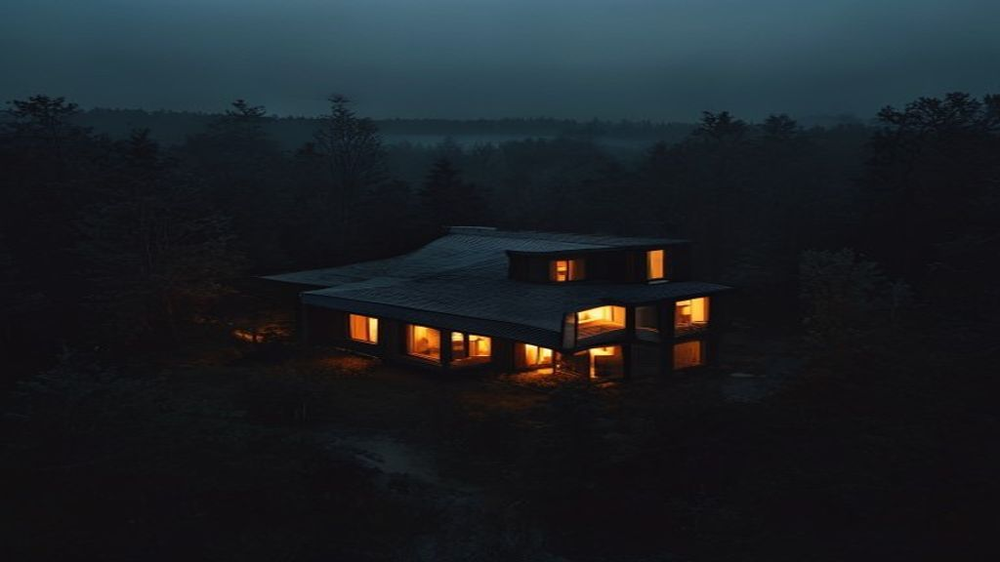
Power
Wide aerial, night. The home glowing warm in a sea of pitch-black wilderness. No roads, no neighbours, no other lights anywhere on the horizon.
AI or composite. Existing Wildernests night render placed in a pitch-black landscape aerial. Critical: no other light sources visible to the horizon.
No VO.
16 / 30
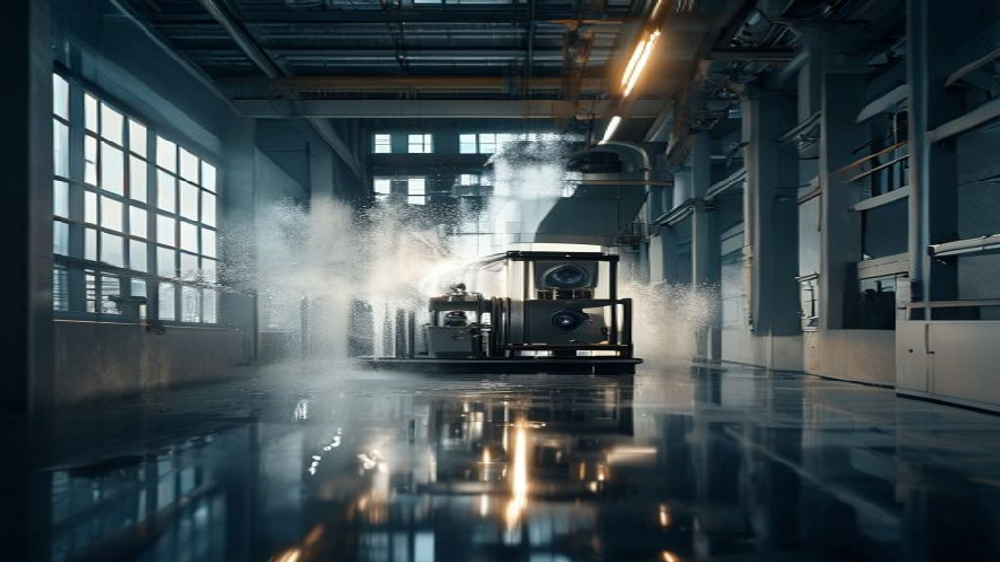
Water
Interior or sheltered exterior. The atmospheric water generation machine. Beautifully lit, treated with architectural reverence. The camera holds.
Real product footage of the actual AWG machine. If existing footage isn't strong enough — capture a dedicated product shoot. This shot must read as real engineering, not AI-rendered.
VO
"The water comes from the air itself,"
17 / 30
Water
Closer on the machine. Working. Detail shot — viewing port, flowing element, visible mechanism. The proprietary nature is the point.
Real product footage. Detail shot of machine in operation.
VO
"drawn down by an atmospheric water generator."
18 / 30
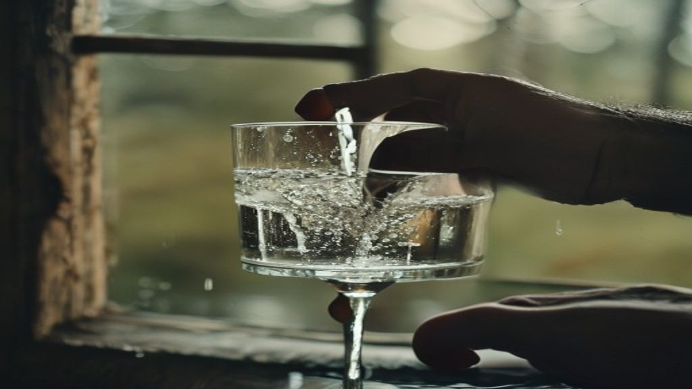
Water
Clean water flowing from a tap into a glass held in a weathered hand. Through the window, the wilderness.
AI or stock. Macro — water running into a glass, weathered hand, wilderness through a window in soft focus. Search: water pouring glass macro, hand glass window, slow motion water tap.
No VO.
19 / 30
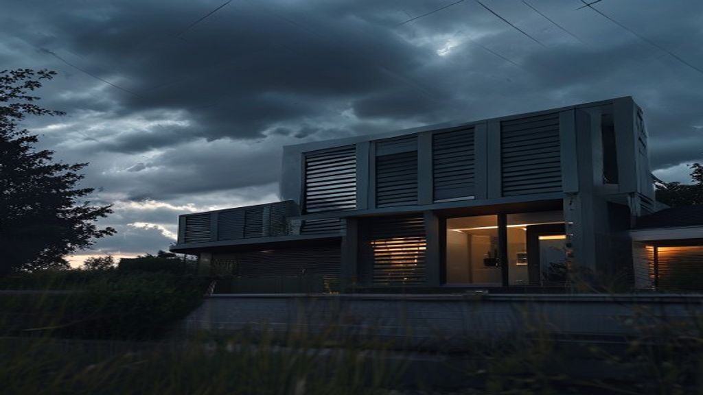
Protection
Exterior of the home. Sky darkening, wind rising. Armoured shutters slide silently into place across the windows, on their own.
AI animation of shutter mechanism over existing render. Or real product footage if automated shutters exist. Mechanical sound, low.
No VO. Mechanical sound and rising wind.
20 / 30
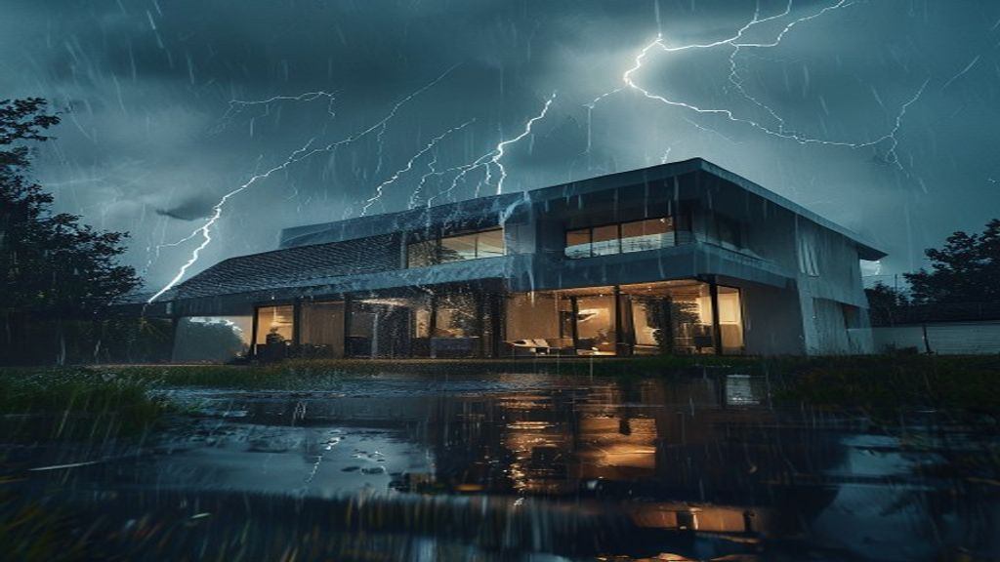
Protection
Storm at full power. Rain sheeting against the closed shutters, lightning flashing behind. The home unmoved.
AI or composite. Home in heavy storm — lightning in background, rain sheeting. Stock storm plates composited over existing renders.
VO
"Our walls hold when the wind comes,"
21 / 30
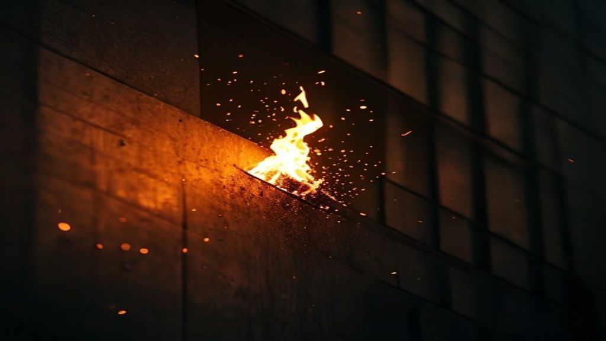
Protection
Slow motion. A single glowing ember lands on the cladding. It darkens. Dies.
Macro slow-mo of ember landing on surface going dark. Stock exists. Search: ember landing slow motion, ash falling macro, fire ember surface.
22 / 30
Protection
Interior. A glass of water on a counter. The surface vibrates in concentric rings, then settles. Half a second of subtle camera shake.
AI or stock. Macro — glass of water with concentric ripple rings, slight camera shake. The Jurassic Park reference — stock footage is cheap and easy to find.
VO
"when the ground itself moves under us,"
23 / 30
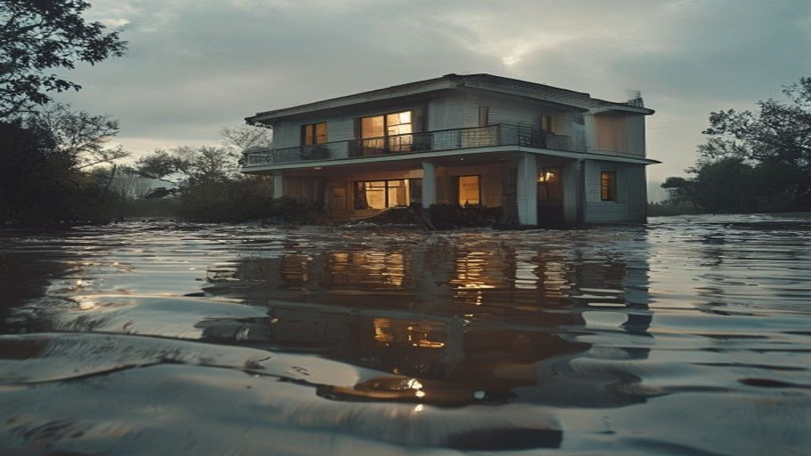
Protection
Wide. The home raised on its foundation. Floodwater running past beneath. The home dry, lit, unmoved.
Composite using existing Wildernests render with floodwater added via VFX. Or AI-generate if a clean composite isn't achievable.
VO
"when the rivers rise."
24 / 30
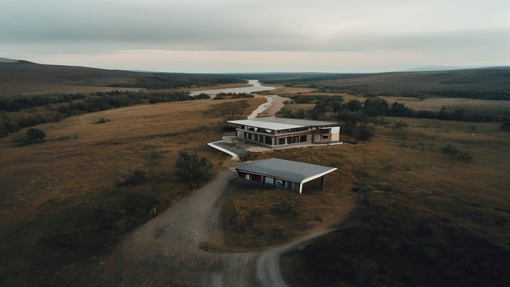
Independence
Aerial. A remote valley. No roads, no power lines, no neighbours. No man-made elements other than the home visible in the frame.
Stock aerial of a remote valley with existing Wildernests render placed within it. Shot from a different angle than the Act 4 hero shot.
VO
"No councils to ask, no grid to wait on, no permission to need."
25 / 30
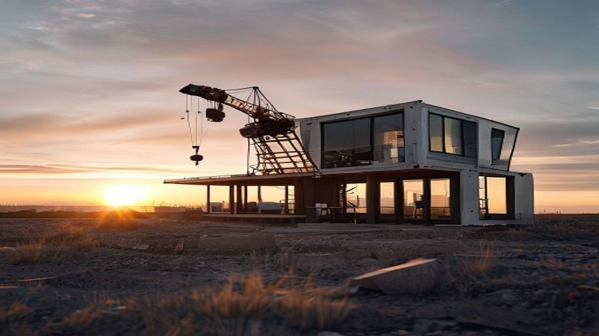
Independence
Time-lapse. Six seconds compressed. A piece of raw land at dawn becomes a home. Modules lowered by crane, walls coupling, glass set. Day rolls to dusk. By the end: chimney smoking, windows warm.
Use actual build time-lapse if Wildernests has it. If not, AI-generate using existing home renders as reference for the final state.
VO
"Raised in three days. On any land we choose."
26 / 30
Act 4
Home
2:00 – 2:25
Back to reality. The rider crests the ridge. The camera stops. The home below him in the last gold of the day.
27 / 30
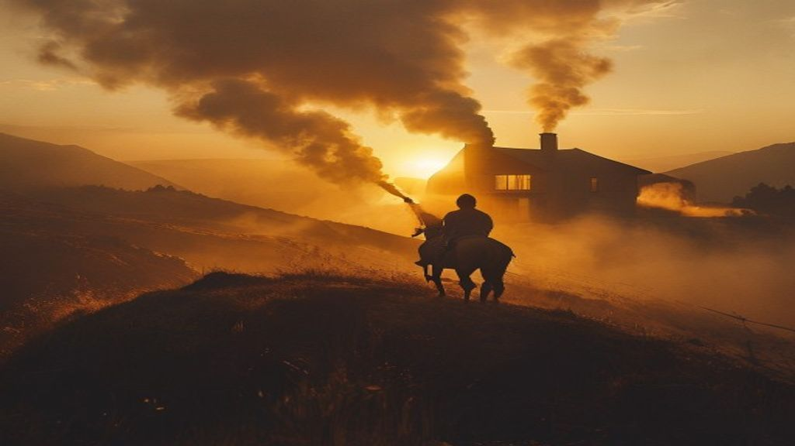
The rider crests the ridge. The camera — which has followed him the entire film — stops. He continues riding without us. Below him in a wide valley: the Wildernest in the last gold of the day. Smoke from the chimney. A single window already lit. Sun dropping behind the far ridge.
AI-generated rider crest, composited with existing Wildernests golden hour render placed in valley below. This is the hero shot of the entire film. Worth multiple generation attempts and careful compositing.
VO — quieter now
"Wherever we choose to stand."
Warm horn enters. Brief swell.
28 / 30
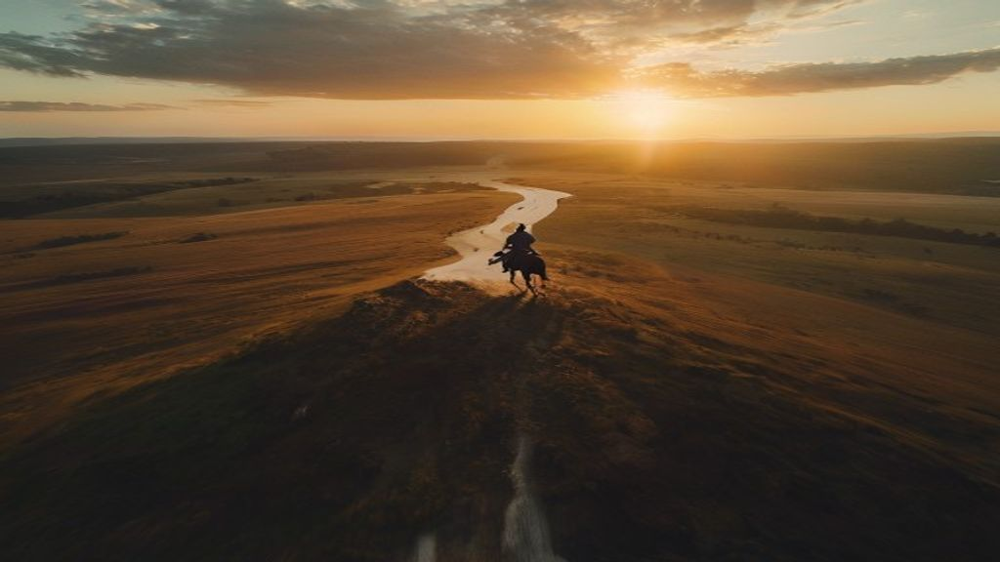
Wide aerial pulling slowly back. The rider a small figure now, the dog at the horse's flank, riding down toward the home. The landscape vast around them. The sun drops behind the far ridge.
AI or composite. Pulling wide aerial — small rider figure descending into valley toward distant home, sun setting. The pull-back may need to be faked through progressively wider stills animated together.
Music resolving.
29 / 30
Cut to black. White type, held quietly.
The frontier is open again.
Alternative closing lines
- Come home to the land.
- Where the renegades are headed.
- The next era starts at the edge.
- Tethered to nothing. Home to everything.
Music resolves and stops.
30 / 30
Notes for the editing team
Make or break
The dust civilisations sequence determines everything. Run a quick test on Scene 5 (medieval town) before committing. If the dirt-rising-and-falling concept doesn't read clearly in motion, adapt now. If it lands, the rest follows easily.
Character consistency
Lock a single reference frame of the rider, dog, and horse and feed it into every generation. Most platforms accept reference frames. Plan for drift and absorb it through wider shots. The dog is small but emotionally important — a different dog appearing mid-film breaks the spell.
Music
Low cello opens and runs as a heartbeat throughout. Second cello joins in Act 2. Piano in Act 3 with the turn. Warm horn for the Act 4 reveal. Swell once when the rider crests the hill, then pull back to cellos and a single piano note. Commission original score if possible — it will outperform library on a film like this.